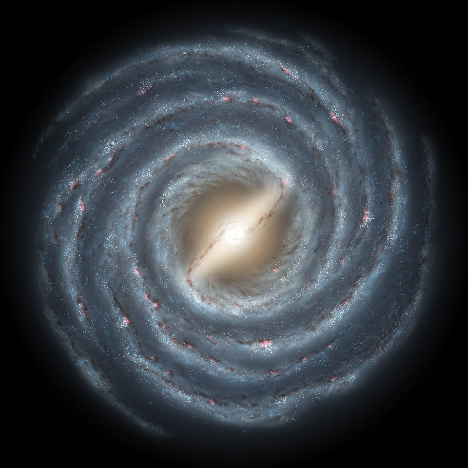
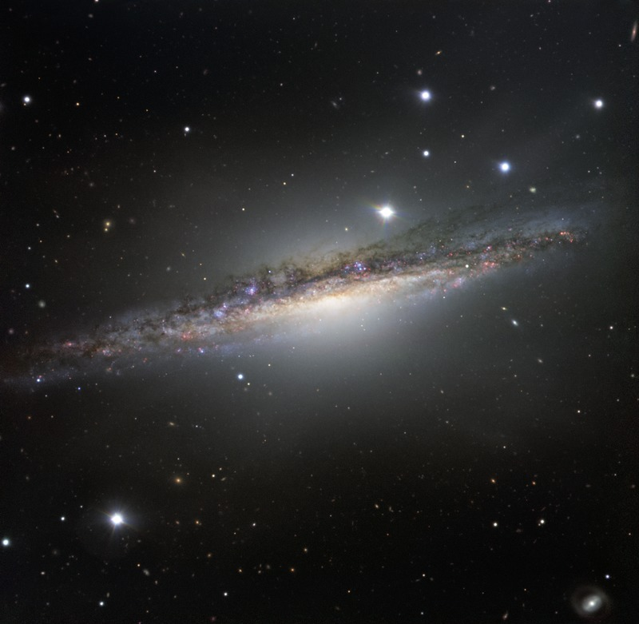
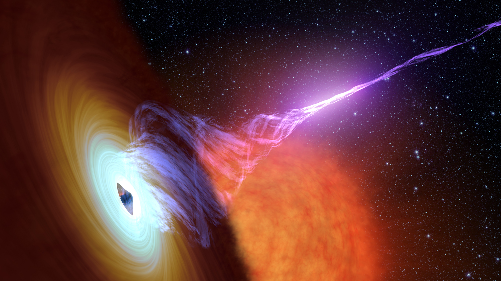
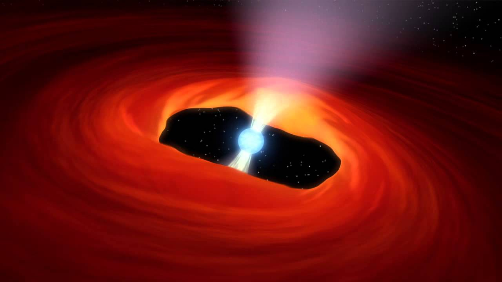
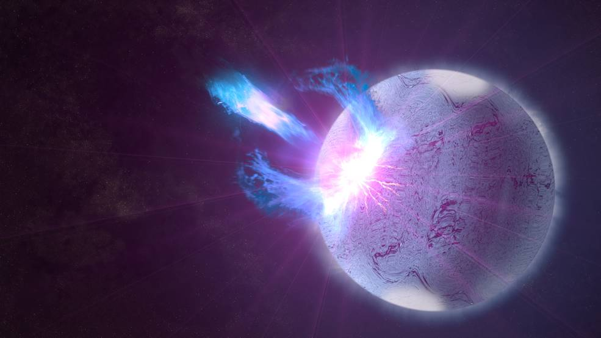
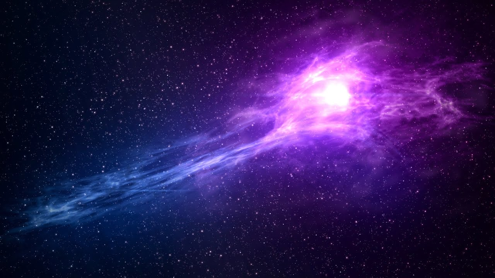
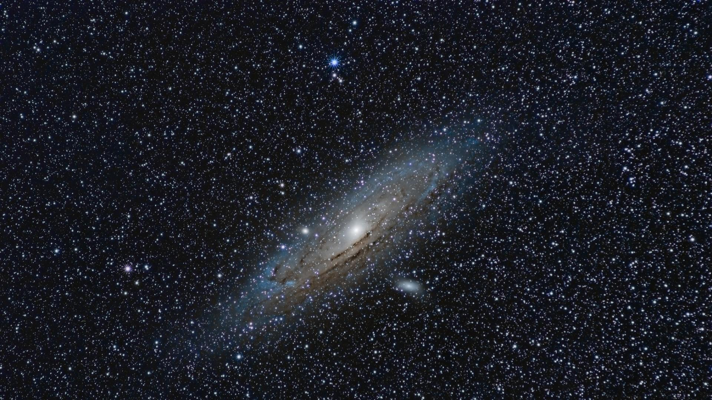
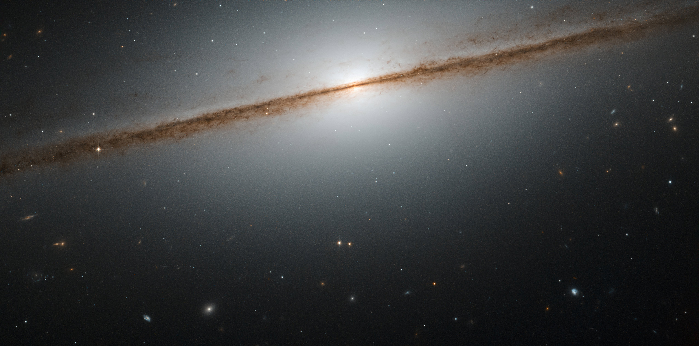

Our Universe is too big and exciting
Universe
The Universe is all of space and time and their contents, including planets, stars, galaxies, and all other forms of matter and energy. The currently estimated size of Universe be 93 billion light years in diameter. In various multiverse hypotheses, a universe is one of many causally disconnected constituent parts of a larger multiverse, which itself comprises all of space and time and its contents.
Galaxy
A galaxy is a gravitationally bound system of stars, stellar remnants, interstellar gas, dust, and dark matter.Galaxies range in size from dwarfs with just a few hundred million (108) stars to giants with one hundred trillion (1014) stars, each orbiting its galaxy's center of mass.
Learn More →Andromeda Galaxy

The Andromeda Galaxy is also known as Messier 31, M31, or NGC 224 and originally the Andromeda Nebula is a spiral galaxy approximately 2.5 million light-years from Earth, and the nearest major galaxy to the Milky Way.The number of stars contained in the Andromeda Galaxy is estimated at one trillion (1×1012), or roughly twice the number estimated for the Milky Way.
View MoreMilky Way Galaxy
The Milky Way is a barred spiral galaxy with a diameter between 150,000 and 200,000 light-years (ly). It is estimated to contain 100–400 billion stars and more than 100 billion planets.The Milky Way is visible from Earth as a hazy band of white light, some 30° wide, arching across the night sky.All the individual naked-eye stars in the entire sky are part of the Milky Way.
View MoreNGC-1055 Galaxy
NGC 1055 is a spiral galaxy located in the constellation Cetus. The galaxy has a prominent nuclear bulge crossed by a wide, dark lane of dust and gas. The spiral arm structure appears to be elevated above the galaxy's plane and obscures the upper half of the bulge.A rough distance estimate for NGC 1055 is 52 million light-years, with a diameter of about 115,800 light-years.
View MoreSome strange masses of universe
Supermassive Blackhole
- Largest Type of Blackholes
- Located in Center of Galaxy
- Gravity collapse in Blackholes
- Their mass is 105~109 M(sun)
- Blackhole Spwan from dying star
For more Information
Click This
Super
Nova
- Luminous stellar explosion
- Sudden re-ignition of nuclear fusion occur
- Expel masses through speed of light
- 3-Naked Eye supernova explosions are observed
- First discovered supernova was HB9
For more Information
Click This
White
Dwarf
- Stellar core remnant
- Composed of electron-degenerate matter
- Final evolutionary state of stars
- No fusion reaction occur in White Dwarf
- It has no source of energy
For more Information
Click This
Neutron Star
A neutron star is the collapsed core of a giant star which before collapse had a total mass of between 10 and 29 solar masses. Neutron stars are the smallest and densest stars.There are thought to be around 100 million neutron stars in the Milky Way.
View MorePulsar
A pulsar is a highly magnetized rotating neutron star or white dwarf that emits a beam of electromagnetic radiation. This radiation can be observed only when the beam of emission is pointing toward Earth.The brightest radio pulsar, the Vela Pulsar.
View MoreMagnetar
A magnetar is a type of neutron star believed to have an extremely powerful magnetic field.The magnetic field decay powers the emission of high-energy electromagnetic radiation, particularly X-rays.Magnetic feild of magnetar is ~109-1011.
View MoreNebula
A nebula is an interstellar cloud of dust and other ionized gases.The term was used to describe any diffuse astronomical object, including galaxies beyond the Milky Way.Most nebulae are of vast size some are hundreds of light-years in diameter.
View MoreSuperNova Explosion
Exploding Star
At its peak brightness, the optical luminosity of a supernova can be comparable to that of an entire galaxy, before fading over several weeks or months. A supernova is a transient astronomical event, occurring during the last evolutionary stages of a massive star or when a white dwarf is triggered into runaway nuclear fusion. The original star, called the progenitor, either collapses to a neutron star or black hole, or it is completely destroyed.Theoretical studies indicate that most supernovae are triggered by one of two basic mechanisms: the sudden re-ignition of nuclear fusion in a degenerate star or the sudden gravitational collapse of a massive star's core.
Login Now
Binary Neutron Stars
Most Explosive stars
About 5% of all known neutron stars are members of a binary system. The formation and evolution of binary neutron stars can be a complex process. Neutron stars have been observed in binaries with ordinary main-sequence stars, red giants, white dwarfs or other neutron stars. According to modern theories of binary evolution it is expected that neutron stars also exist in binary systems with black hole companions. The merger of binaries containing two neutron stars, or a neutron star and a black hole, are expected to be prime sources for the emission of detectable gravitational waves.
Login Now

Composition of Universe
Hypothetical Dark Matter
The Universe is composed almost completely of dark energy, dark matter, and ordinary matter. Other contents are electromagnetic radiation and anti-matter. Dark matter is a hypothetical kind of matter that is invisible to the entire electromagnetic spectrum, but which accounts for most of the matter in the Universe. The existence and properties of dark matter are inferred from its gravitational effects on visible matter, radiation, and the large-scale structure of the Universe.
Login NowSupermassive Blackhole
Located in Center of Galaxy
The origin of supermassive black holes remains an open field of research. Astrophysicists agree that once a black hole is in place in the center of a galaxy, it can grow by accretion of matter and by merging with other black holes. There are, however, several hypotheses for the formation mechanisms and initial masses of the progenitors, or "seeds", of supermassive black holes.Gravitation from supermassive black holes in the center of many galaxies is thought to power active objects such as Seyfert galaxies and quasars. An active galactic nucleus is now considered to be a galactic core hosting a massive black hole that is accreting matter and displays a sufficiently strong luminosity.
Login Now
White Dwarf
Final evolutionary state of sun
White dwarfs are thought to be the final evolutionary state of stars whose mass is not high enough to become a neutron star, that of about 10 solar masses. This includes over 97% of the other stars in the Milky Way.Usually, white dwarfs are composed of carbon and oxygen. If the mass of the progenitor is between 8 and 10.5 solar masses (M☉), the core temperature will be sufficient to fuse carbon but not neon, in which case an oxygen–neon–magnesium white dwarf may form. Stars of very low mass will not be able to fuse helium, hence, a helium white dwarf may form by mass loss in binary systems.
Login Now
Pulsar
Magnetized Rotating Nuetron Star
The periods of pulsars make them very useful tools for astronomers. Observations of a pulsar in a binary neutron star system were used to indirectly confirm the existence of gravitational radiation. The first extrasolar planets were discovered around a pulsar, PSR B1257+12. Certain types of pulsars rival atomic clocks in their accuracy in keeping time.The events leading to the formation of a pulsar begin when the core of a massive star is compressed during a supernova, which collapses into a neutron star. The neutron star retains most of its angular momentum, and since it has only a tiny fraction of its progenitor's radius ,Pulsar is formed with very high rotation speed.
Login Now
Magnetar
Highly Magnetized Neutron Star
Magnetars are characterized by their extremely powerful magnetic fields of ∼109 to 1011 T. These magnetic fields are hundreds of millions of times stronger than any man-made magnet, and quadrillions of times more powerful than the field surrounding Earth.The strong fields of magnetars are understood as resulting from a magnetohydrodynamic dynamo process in the turbulent, extremely dense conducting fluid that exists before the neutron star settles into its equilibrium configuration.When in a supernova, a star collapses to a neutron star, and its magnetic field increases dramatically in strength.
Login Now

MilkyWay Galaxy
Our Home Galaxy
The Milky Way is the galaxy that contains the Solar System and Earth, with the name describing the galaxy's appearance from Earth: a hazy band of light seen in the night sky formed from stars that cannot be individually distinguished by the naked eye.Stars and gases at a wide range of distances from the Galactic Center orbit at approximately 220 kilometers per second.The Milky Way is visible from Earth as a hazy band of white light, some 30° wide, arching across the night sky.The Milky Way contains between 200 and 400 billion stars and at least 100 billion planets.
Login Now
Nebula
Interstellar Cloud Place of star formation
Originally, the term was used to describe any diffuse astronomical object, including galaxies beyond the Milky Way. The Andromeda Galaxy, for instance, was once referred to as the Andromeda Nebula (and spiral galaxies in general as "spiral nebulae") before the true nature of galaxies was confirmed in the early 20th century by Vesto Slipher, Edwin Hubble and others.Most nebulae are of vast size; some are hundreds of light-years in diameter. A nebula that is barely visible to the human eye from Earth would appear larger, but no brighter, from close by.
Login Now

Andromeda
Neighbor Galaxy
The Andromeda Galaxy was formed roughly 10 billion years ago from the collision and subsequent merger of smaller protogalaxies.This violent collision formed most of the galaxy's (metal-rich) galactic halo and extended disk. During this epoch, its rate of star formation would have been very high, to the point of becoming a luminous infrared galaxy for roughly 100 million years. Andromeda and the Triangulum Galaxy had a very close passage 2–4 billion years ago.The Milky Way and Andromeda galaxies are expected to collide in ~4.5 billion years, merging to form a giant elliptical galaxy or a large lenticular galaxy.
Login Now
NGC-1055
Local Group Galaxy
NGC 1055 is an edge-on spiral galaxy located in the constellation Cetus. The galaxy has a prominent nuclear bulge crossed by a wide, knotty, dark lane of dust and gas. The spiral arm structure appears to be elevated above the galaxy's plane and obscures the upper half of the bulge. Discovered on December 19, 1783 by William Herschel from his home in Slough England. It is a binary system together with the bright spiral galaxy M77 (NGC 1068). These two are the largest galaxies of a small galaxy group that also includes NGC 1073, and five other small irregular galaxies.
Login Now